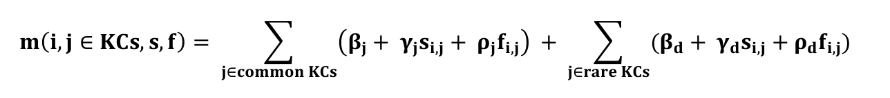
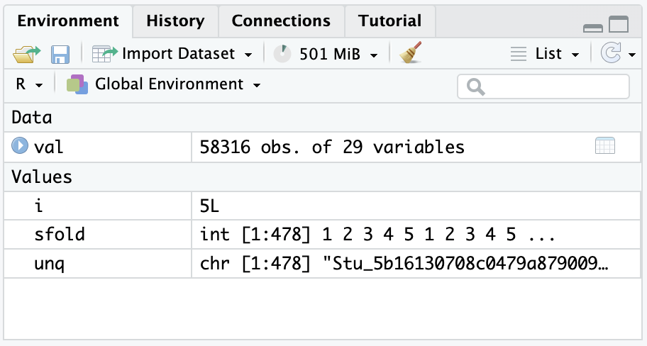

Our second case study is inspired by Maier, Baker, & Stalzer (2021). This research builds a model of exercise difficulties on pass-fail data. The primary aim of this case study is to gain some hands-on experience with essential R packages and functions for Logistic Knowledge Tracing, and its simplest variant, Performance Factors Analysis (PFA).
This paper discussed some of the challenges in PFA’s real-world application and some potential solutions: insufficient number of practices, degenerate parameters, rare benchmarks, and compensatory vs. conjunctive skill relationships.
Motivation
Althrough PFA has been widely used in research and very successful in predicting students’ future performance, there’s little study on what factors impact PFA’s performance in real-world settings.
Research Question
The central goal of this research is:
This paper’s goal is to study the factors that have emerged for other algorithms, to better understand the use of PFA in real-world learning.
Dataset and Model
The data used in this paper is from Reveal Math Course 1, a digital core math product for 6th grade. This dataset includes 3073 students in 46 schools. The authors randomly select 20% of the students as testing set and 80% of the students as training set. Model’s performance was analyzed on the testing set.
The authors trained a baseline model using the original formula. Overall, AUC is in the 0.78-0.80 range and RMSE values are in the 0.42-0.44 range.
Challenges
There are four challenges discussed in this paper.
Insufficient Number of Practices: The authors found when students in the data don’t encounter a skill enough times, the model will perform more poorly, and extreme parameters will appear. Thus, several experiments were conducted involving the number of practices per skill, filtering on real data. The authors find major improvement from 2 to 3 practices and it continues up to 6. They also find that the more practices found in the training data, the better the model will perform on the testing set. The improvement was the most substantial from the 2nd to 5th practices, but still increased up to practice 12.
Degenerate Parameters: First, the authors identified 3 types of degeneracy:
Type 1: γ < 0 (Getting an item right leads to worse future performance overall)
Type 2: γ < ρ (Getting an item right leads to worse future performance than getting it wrong)
Type 3: γ = ρ = 0 (No improvement)
They found 6 skills that had type 1 degeneracy, and 7 skills had type 3 degeneracy. There was type 2 degeneracy if the model was trained with the data from 4 or fewer practices. The authors suggested fixing these problems by constraining the parameters during fitting (as done for BKT in Corbett and Anderson, 1995).
Rare vs Common Skills: A model needs to be able to handle both common and rare skills. Thus, the authors proposed to adjust the PFA formula to differentiate common and rare skills.. They proposed either fitting a common set of parameters across all rare skills, or using the average parameters of the common skills for the rare skills.
Compensatory vs Conjunctive Skills in PFA: If skills are treated as conjunctive, then a student needs to know every skill tagged to an item, to solve it correctly. If skills are compensatory, then students need to know at least one of the skills tagged to an item, to solve it correctly. The original version of PFA is compensatory; the authors compared that to a conjunctive version and a mathematical model in between compensatory and conjunctive – assuming performance is an average of skills involved in the item. They found that both new versions performed worse than the original compensatory model. This contradicts a past result for BKT.
Summary
Overall, the authors believe that the degenerate parameters are an issue for PFA and there are still some other challenges that might appear in real-world settings. However, the authors argue that these challenges can be addressed with only minor adjustments. Thus, PFA is a very reasonable choice in real-world settings.
1b. Load Packages
In this case study, you will use the data from this project by Dr. Philip I. Pavlik Jr. to learn how to fit a PFA model. First, you will learn about the essential packages and resources you will be using in this case study.
CRAN: The Comprehensive R Archive Network
CRAN is a network of FTP and web servers around the world that store identical, up-to-date, versions of code and documentation for R and R packages.
You may use the CRAN mirror nearest to you to minimize network load.
LKT: Logistic Knowledge Tracing
This package computes Logistic Knowledge Tracing (‘LKT’) which is a general framework for tracking human learning in an educational software system. Please see Pavlik, Eglington, and Harrell-Williams (2021). The LKT framework allows a researcher or practitioner to select and then compute features of student data that are used as predictors of subsequent performance. LKT allows flexibility in the choice of predictive components and features. The system is built on top of ‘LiblineaR’, which computes logistic models quickly.
The following object is masked from 'package:SparseM':
det
Loading required package: data.table
Loading required package: LiblineaR
Package 'LKT' version 1.7.0
Type 'citation("LKT")' for citing this R package in publications.
2. Wrangle
Data wrangling is the process of converting raw data into a format suitable for analysis. Typically, data is not formatted in the necessary fashion for your package when you first obtain it.
Import the dataset
You’ll first import the raw dataset originally obtained from this project by Dr. Philip I. Pavlik Jr. This dataset is included in the LKT package as largerawsample
Use the code chunk below to import the dataset:
set.seed(41)val<-largerawsample
Convert to a data table
val =setDT(val)
data = setDT(data): This line is using the setDT() function to convert the object data into a data.table object.
Data Cleaning and Transformation
Next, you are going to prepare the data for subsequent analysis, making it more manageable, understandable, and suitable for the Performance Factors Analysis.
#Clean it upval$KC..Default.<-val$Problem.Name# get the times of each trial in seconds from 1970val$CF..Time.<-as.numeric(as.POSIXct(as.character(val$Time),format="%Y-%m-%d %H:%M:%S"))#make sure it is ordered in the way the code expectsval<-val[order(val$Anon.Student.Id, val$CF..Time.),]#create a binary response column to predict and extract only data with a valid valueval$CF..ansbin.<-ifelse(tolower(val$Outcome)=="correct",1,ifelse(tolower(val$Outcome)=="incorrect",0,-1))val<-val[val$CF..ansbin.==0| val$CF..ansbin.==1,]# create durationsval$Duration..sec.<-(val$CF..End.Latency.+val$CF..Review.Latency.+500)/1000
val$KC..Default.<-val$Problem.Name:
This line of code assigns the value of val$Problem.Name to val$KC..Default. In R, the <- operator is used for assignment. So, it’s taking the value of val$Problem.Name and assigning it to val$KC..Default. By looking at the data, we could see that Problem.Name column is more accurate in describing the knowledge component (KC).
This line converts the Time column in the dataframe val into seconds since the UNIX epoch (January 1, 1970). It first converts Time to character type, then to POSIXct (a datetime object in R), and finally to numeric, resulting in the number of seconds since 1970.
This line reorders the dataframe val based on two columns: Anon.Student.Id and CF..Time.. This ensures that the data is arranged in the expected order for further processing.
This line creates a new column named CF..ansbin. in the dataframe val. It assigns 1 if the Outcome column (converted to lowercase) is “correct”, 0 if it’s “incorrect”, and -1 otherwise.
This line filters the dataframe val to only include rows where the CF..ansbin. column value is either 0 or 1, meaning it’s either “incorrect” or “correct”. Rows with a value of -1 (indicating invalid or other outcomes) are excluded.
Student-level cross-validation
Creating student-level cross validation folds
# Define the number of foldsk <-10# Get unique student IDsunique_students <-unique(val$Anon.Student.Id)# Randomly shuffle the student IDsshuffled_students <-sample(unique_students)# Split student IDs into k foldsfolds <-split(shuffled_students, cut(seq_along(shuffled_students), k, labels =FALSE))#Spilt data into 5, we will use this part for later cross-validationfor (i in1:k) {# Get test student IDs for this fold test_student_ids <- folds[[i]]# Create test and train datasets test_data <-subset(val, Anon.Student.Id %in% test_student_ids) train_data <-subset(val, !(Anon.Student.Id %in% test_student_ids))}
3. Explore
Take a look at the dataset
What does a LKT dataset look like? It is similar to what BKT expects but a little bit different. The dataset is huge and hard to print with R. Thus, please double-click the val under the “Environment” tab on the top-right of the R-studio to take a look at the data.

There are many variables inside this sheet. However, only four of them matter. Let’s filter down to them::
In this section, we will build four variants of LKT, including the classic PFA variant.
Additive Factors Model (AFM) fixed effect version
for (i in1:k) {# Get test student IDs for this fold test_student_ids <- folds[[i]]# Create test and train datasets test_data <-subset(val, Anon.Student.Id %in% test_student_ids) train_data <-subset(val, !(Anon.Student.Id %in% test_student_ids)) modelob <-LKT(data = train_data, interc=FALSE,components =c("Anon.Student.Id","KC..Default.","KC..Default."),features =c("intercept", "intercept", "lineafm"))#We are not able to use its predict function to evaluate the model because it requires the input to be like the cross-validation only for post-hoc you mentioned.}
Performance Factors Analysis (PFA) fixed effects version
for (i in1:k) {# Get test student IDs for this fold test_student_ids <- folds[[i]]# Create test and train datasets test_data <-subset(val, Anon.Student.Id %in% test_student_ids) train_data <-subset(val, !(Anon.Student.Id %in% test_student_ids)) modelob <-LKT(data = train_data, interc=FALSE,components =c("Anon.Student.Id", "KC..Default.", "KC..Default.", "KC..Default."),features =c("intercept", "intercept", "linesuc$","linefail$"))#We are not able to use its predict function to evaluate the model because it requires the input to be like the cross-validation only for post-hoc you mentioned.}
for (i in1:k) {# Get test student IDs for this fold test_student_ids <- folds[[i]]# Create test and train datasets test_data <-subset(val, Anon.Student.Id %in% test_student_ids) train_data <-subset(val, !(Anon.Student.Id %in% test_student_ids)) modelob <-LKT(data = train_data, interc=TRUE,components =c("Anon.Student.Id", "KC..Default.", "KC..Default.", "KC..Default."),features =c("intercept", "intercept", "propdec2","linefail"),seedpars=c(.9))#We are not able to use its predict function to evaluate the model because it requires the input to be like the cross-validation only for post-hoc you mentioned.}
The RPFA includes seedpars=c(.9)). It is the an initial set of parameter values. These values serve as a starting point for your parameter search.
Individualized Additive Factors Model (iAFM) fixed effect version
for (i in1:k) {# Get test student IDs for this fold test_student_ids <- folds[[i]]# Create test and train datasets test_data <-subset(val, Anon.Student.Id %in% test_student_ids) train_data <-subset(val, !(Anon.Student.Id %in% test_student_ids)) modelob <-LKT(data = train_data, interc =TRUE,components =c("Anon.Student.Id", "KC..Default.", "KC..Default.", "KC..Default."),features =c("intercept", "intercept", "lineafm$", "lineafm"),interacts =c(NA, NA, NA, "Anon.Student.Id"))#We are not able to use its predict function to evaluate the model because it requires the input to be like the cross-validation only for post-hoc you mentioned.}
interacts = c(NA, NA, NA, “Anon.Student.Id”): This argument specifies interactions between components. Here:
The first three components have no interaction (NA).
The fourth component ("KC..Default.") interacts with "Anon.Student.Id".
👉 Your Turn⤵
Now you have tried to build a few LKT model variants. You’ve only built some of the simpler variants. Pavlik’s papers show other, more complex variants.
Please write codes below to build an LKT model using 2012 ASSISTments dataset. More Background about this research is here.